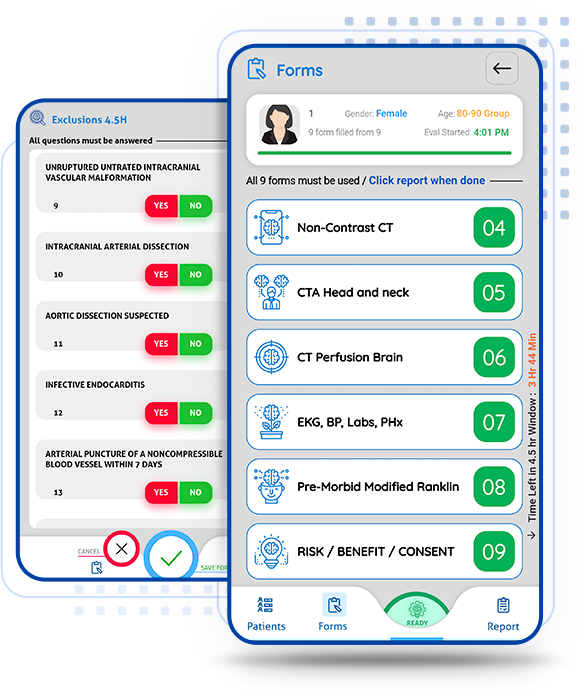
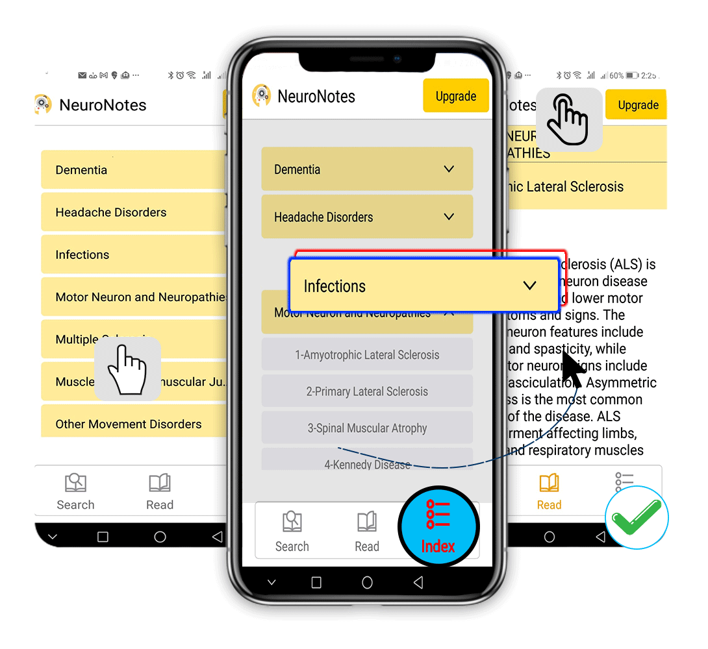
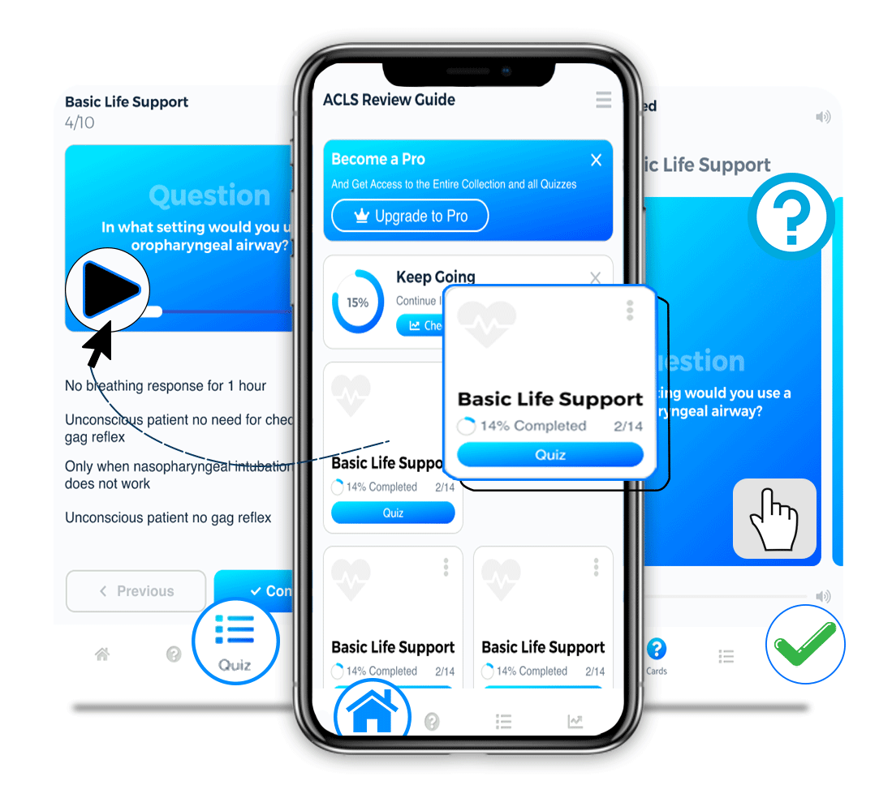

Neurology Residency
Books And Apps
Books And Apps
HOW TO READ A NORMAL SCAN series focuses on normal neuroanatomy as seen on a standard CT and MRI and MRA scas of the Brain and Spine.
It is vitally important that you have a clear idea as to the identity of each structure that you see on the MRI or CT scan. It is of great importance that you should have as few ‘blind spots’ in your knowledge of Neuroradiological anatomy as possible, this makes life easier for you and your patient and if you are a resident this means way less headaches for your program director.
As health care providers or health care students and trainees, we have all been there. We are staring intensely at a black and white picture known as the MRI (or CT), and the eager guy standing next to you points to some strange blob on it and asks “What is that?” In that moment of panic, you try to decide whether silence is golden or stupid. You try to decide whether you should open your mouth and reveal your ignorance and put your white coat to shame, or to wisely stroke your beard and look thoughtful.
Medical student years and Residency years all go at the speed of a bullet train, where you are caught in the read-work-sleep cycle and you have no time to pause and think about the fundamentals that get glossed over on the way. Sure, you know how to identify a ‘stroke’ on the MRI scan but I bet you anything that even a kindergartner can stump you with a ‘What is that?’ question by just pointing at some random structure on the brain scan. It is all too easy to make the journey from the first glorious day of medical school to the last heartbreaking day of your practice without having a clue as to what that gray blob on the MRI actually represents.
The objective of the “HOW TO READ A NORMAL SCAN” series is to familiarize you with NORMAL anatomy as seen on MRI scans and CT scans before memorizing what Hallevorden Spatz or Blah Blah looks like (sure enough in your Board exam they will want you to identify Blah Blah that no one has seen in 500 doctor years).
My hope is, that after reading these books, at the very least you can point out structures on a normal scan and identify exactly what they are. And it is not just about avoiding the embarrassment of ignorance, it is about the sheer satisfaction of knowing what these things are...

COMPREHENSIVE CHAOS-FREE STROKE EVALUATION IN RECORD TIME! The stroke simulator app trains you to do a rapid yet comprehensive evaluation of acute stroke, factors in all data pertinent for the 4.5 hr IV TPA window, the 6 hour endovascular window, the 6-16 hr DEFUSE3 endovascular window and the 6-24 hour DAWN endovascular window and walks you through the logical and actionable options. See sample output for a patient simulation.
NEURO NOTES is a compact source of information that you would otherwise have to scour multiple sources for. These are just notes that contain a lot of information you may need to refer to or review in your daily practice. 159 Chapters at the moment and more to be added later on. The focus in on information that is of practical relevance, as opposed to any controversies or debates. NEURO NOTES was created with on objective, ie to make relevant information accessible easily when you need it. Please let us know if there are topics you would like to see added to this list.


The ACLS system is fundamentally simple, but then why are so many folks confused about it? There are some core ALCS facts that you must know cold. This app, ACLS REVIEW GUIDE has more than 200 questions and answers that cover a large chunk of those core points. The entire app is designed to facilitate learning. The ACLS REVIEW GUIDE app uses a two step strategy. The flashcard part of the ACLS REVIEW GUIDE focuses on teaching you core learning points. Flash cards are one of the most effective ways of learning new information.